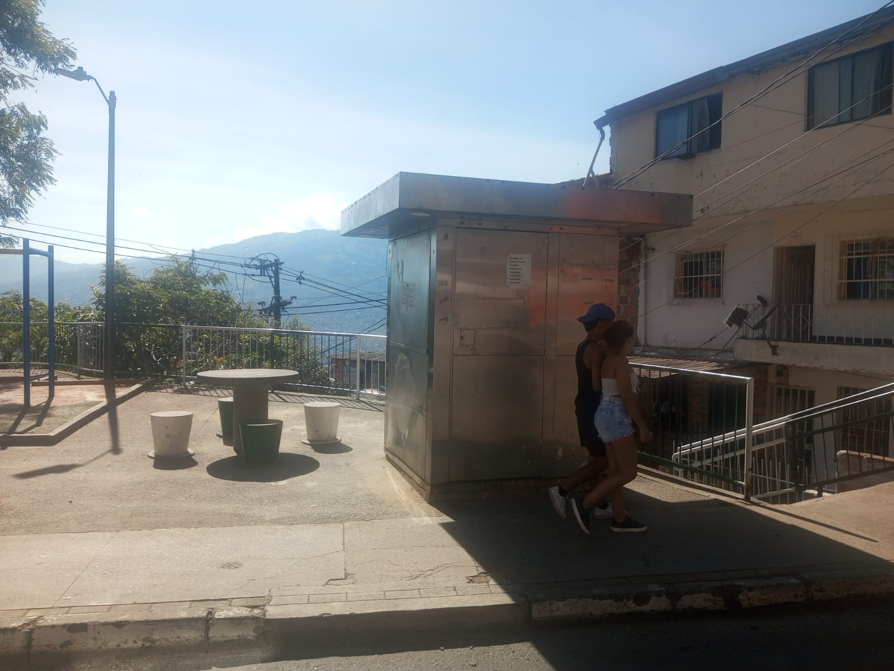

Fracciones sin miedo
Mentor: Sara | 4 estudiantes conectados | 25 min
5/4 = 1 1/4
Primero buscamos común denominador.
Dibuja la pizza: 4 partes y 2 partes.
Resultado: 5/4 = 1 1/4
Comuna 3 - Manrique
Centro de tareas, laboratorio de IA, cine comunitario y agencia maker juvenil para aprender cerca, crear juntos y mover el barrio.


Zona colaborativa
Nuestro motor de talentos: un espacio donde el conocimiento fluye entre pares. Aquí, jóvenes con saberes avanzados guían y apoyan a otros en sus tareas, multiplicando habilidades a través de la enseñanza colaborativa.
Mentor: Sara | 4 estudiantes conectados | 25 min
Laboratorio IA Generativa
Prompts guiados para imágenes, guiones, branding, automatización simple y storytelling de proyectos del barrio.
Actúa como un mentor creativo de Manrique...
Arrastra la energía del reto para ver qué equipo se activa.
Cine comunitario
Microdocumentales, podcast, fotografía, rutas culturales y memoria barrial en un reproductor pensado para datos bajos.
Primeros clubes de tareas se reúnen en casas, centros de integración, bibliotecas y espacios publicos.
Red de mentores
Una red educativa comunitaria con habilidades, rutas de aprendizaje, badges y niveles colaborativos.
Matemáticas visuales, lectura y clubes de niñas maker.
Guion, cámara, podcast y memoria de la ladera.
Prompts, identidad visual y prototipos para emprendimientos.
Nodo digital de barrio
Ubicación, disponibilidad, eventos, talleres y mentorías conectadas sobre la ladera.
Dashboard de impacto
Indicadores transparentes, participativos y fáciles de compartir con familias, aliados y jóvenes.
Compromiso global
Garantizar una educación inclusiva y equitativa de calidad para todos en el barrio.
Fomentar la infraestructura digital y la innovación tecnológica desde la ladera.
Lograr que Manrique sea un entorno inclusivo, seguro y resiliente.